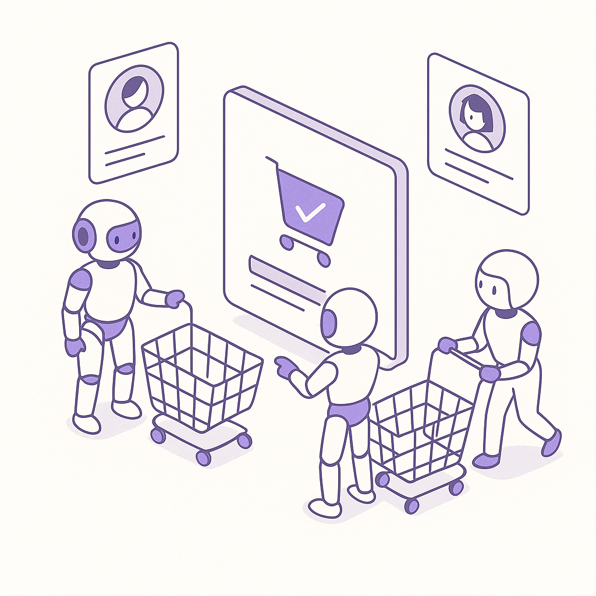

Publishing Recommendation
reviseSeveral posts contain excessive self-promotion and lack concrete, actionable insights, which undermines the practical and insightful tone of Purands AI's brand voice.
Today's output needs refinement. The posts are too promotional and lack the unique, practical insights that align with Purands AI's brand voice. Specific risks include overstatement of the Shopify-Tailwind acquisition impact and insufficient depth on Apple Watch's privacy concerns. The content should be revised to focus more on concrete takeaways and industry implications, reducing self-promotion to ensure credibility and engagement.
LinkedIn Posts (10)
1. Shopify acquires Tailwind ★ Purands solution · high priority
CTA: How do you think Tailwind's integration will impact your Shopify experience?
{kind=link}
Image prompt · isometric-flat
Caption: Shopify acquires Tailwind: A new design era.
Alternative hooks
- Shopify just strengthened its game with Tailwind, reshaping the design landscape.
- Tailwind joins Shopify: A new era for user engagement?
- How Shopify's Tailwind acquisition can shape retention strategies.
Research behind this post (sources, summaries & confidence)
Shopify acquires Tailwind conf 0.90 · Shopify ecosystem
Shopify's acquisition of Tailwind indicates significant developments in the Shopify ecosystem, potentially affecting app integrations and merchant services. Such moves can influence retention strategies through enhanced design and user experience capabilities.
Sources & what I took from each
- Shopify acquired Tailwind: Official announcement on Tailwind's blog confirms the acquisition. ↗ read source
Original trend links
Risks / caveats
- Integration challenges could delay the expected enhancements in user experience.
- Potential pushback from developers who prefer Tailwind's independence before acquisition.
2. Coca-Cola uses AI to improve retailer ordering in Malaysia ★ Purands solution · high priority
CTA: How do you see AI enhancing customer engagement in your business?
Alternative hooks
- Coca-Cola's AI initiative in Malaysia is more than just tech talk-it's a lesson in practical application.
- What happens when Coca-Cola uses AI to optimize retailer orders in Malaysia? Less waste, more satisfaction.
- AI isn't just for tech giants. Coca-Cola's Malaysia project shows how it can transform retail.
Research behind this post (sources, summaries & confidence)
Coca-Cola uses AI to improve retailer ordering in Malaysia conf 0.80 · AI startups
Coca-Cola's use of AI in Malaysia to optimize retailer ordering is a pivotal case of AI applications in APAC commerce. This aligns with our focus on AI-driven retention marketing and operational efficiencies.
Sources & what I took from each
- Coca-Cola uses AI for retailer ordering in Malaysia: Coca-Cola's initiative in Malaysia is reported by AI-focused news outlets. ↗ read source
Original trend links
Risks / caveats
- Implementation challenges could limit the effectiveness of AI solutions.
- Data privacy concerns could arise from AI handling sensitive retailer data.
3. Meta introduces Muse, a personal AI agent ★ Purands solution · high priority
CTA: How do you see AI transforming customer retention in your business?
{kind=link}
Image prompt · flat-vector
Caption: Meta's Muse: Autonomy in action.
Alternative hooks
- Meta's Muse is redefining AI autonomy.
- Could AI autonomy transform customer engagement?
- What if your AI could manage tasks autonomously?
Research behind this post (sources, summaries & confidence)
Meta introduces Muse, a personal AI agent conf 0.80 · AI startups
Meta's introduction of Muse as a personal AI agent capable of autonomous actions is a leap in AI personal assistants. This could transform customer engagement models and retention strategies.
Sources & what I took from each
- Meta introduces Muse, a personal AI agent: MarkTechPost reports on Meta's announcement of Muse, detailing its features and capabilities. ↗ read source
Original trend links
Risks / caveats
- Potential privacy concerns with AI managing personal tasks.
- Technical challenges in ensuring Muse operates effectively and securely.
4. AI in business ★ Purands solution · high priority
CTA: Have you seen AI enhance your shopping experience recently? Share your thoughts.
Alternative hooks
- Retailers are turning to AI to perfect the art of 'smart' shopping.
- AI is reshaping supply chains and customer experiences in retail.
- How is AI making retail more efficient and personalized?
Research behind this post (sources, summaries & confidence)
Retailers bet on AI for supply chain, 'smart' shopping conf 0.70 · AI in business
The adoption of AI in retail supply chains and smart shopping initiatives is transforming customer experiences, which can significantly enhance retention strategies by improving efficiency and personalization.
Sources & what I took from each
- Retailers are using AI for supply chain and smart shopping: Reports from Retail Dive indicate increasing AI adoption in retail for these purposes. ↗ read source
Original trend links
Risks / caveats
- Technical challenges and high costs could hinder AI implementation.
- Potential job displacement concerns due to automation.
5. Preparing your platform for agentic commerce: How to authenticate AI buying agents vs. synthetic bots ★ Purands solution · high priority
CTA: How is your platform preparing for the rise of AI buying agents?
Alternative hooks
- Agentic commerce is changing the way we think about online shopping.
- AI buying agents are here. Is your platform ready?
- How do you tell a helpful AI agent from a harmful bot?
Research behind this post (sources, summaries & confidence)
Preparing your platform for agentic commerce: How to authenticate AI buying agents vs. synthetic bots conf 0.60 · AI in business
The rise of agentic commerce, where AI agents make purchasing decisions, is crucial for businesses in understanding how to differentiate between beneficial and harmful bots, directly impacting customer interactions and retention strategies.
Sources & what I took from each
- Agentic commerce is becoming significant: Sponsored articles discuss the implications of agentic commerce but lack broad industry validation. ↗ read source
Original trend links
Risks / caveats
- Lack of widespread adoption could limit the impact of this trend.
- Concerns over privacy and security with AI agents making autonomous transactions.
6. Preparing your platform for agentic commerce ★ Purands solution · high priority
CTA: How do you see agentic commerce affecting your current customer engagement strategies?

⬇ Download image{kind=link}
Image prompt · isometric-flat
Caption: Agentic commerce: The AI-driven future.
Alternative hooks
- Agentic commerce is reshaping e-commerce interactions. Is your platform ready?
- AI agents are taking charge in transactions. How will this impact your strategy?
- E-commerce platforms face a new challenge: adapting to agentic commerce.
Research behind this post (sources, summaries & confidence)
Preparing your platform for agentic commerce conf 0.60 · AI in business
The shift towards agentic commerce, where AI agents autonomously perform transactions, is a critical trend impacting e-commerce platforms and their approach to customer retention.
Sources & what I took from each
- Agentic commerce is impacting e-commerce platforms: Sponsored content discusses the need for platform adaptation, though evidence of widespread adoption is limited. ↗ read source
Original trend links
Risks / caveats
- Security and privacy concerns with AI-driven transactions.
- Market adoption may be slower than predicted, affecting strategy shifts.
7. Apple's new AI features in Apple Watch raise privacy concerns
CTA: How do you feel about always-listening tech in your everyday devices?
{kind=link}
Image prompt · flat-vector
Caption: Privacy vs. convenience: The AI dilemma.
Alternative hooks
- Last week, I noticed a headline that caught my attention: Apple's new AI features in their watches are always listening.
- Ever thought your watch might be eavesdropping? Apple's latest update brings this concern to life.
- Apple's new AI features might be smart, but are they too intrusive?
Research behind this post (sources, summaries & confidence)
Apple's new AI features in Apple Watch raise privacy concerns conf 0.85 · AI in business
Apple's introduction of always-listening AI features in its watches raises important privacy concerns, which could affect customer trust and retention, especially in privacy-sensitive markets like APAC.
Sources & what I took from each
- Apple Watch's new AI features raise privacy concerns: TechCrunch reports on privacy issues related to Apple's new AI features. ↗ read source
Recent news
- TechCrunch article discusses the implications of always-listening features in consumer devices.
Original trend links
Risks / caveats
- Increased scrutiny from privacy advocates and regulators.
- Potential backlash from privacy-conscious consumers.
8. Apple Watch’s new feature listens to your chats and recaps them
CTA: How do you feel about AI devices listening and recapping your conversations?
Alternative hooks
- The Apple Watch now recaps your chats. What does that mean for AI?
- Listening and recapping: Apple's latest step in AI integration.
- Conversational AI is evolving. Is your Apple Watch the next step?
Research behind this post (sources, summaries & confidence)
Apple Watch’s new feature listens to your chats and recaps them conf 0.85 · AI in business
New conversational recap features in consumer devices like Apple Watch could influence how users engage with digital assistants, impacting the role of AI in customer engagement and retention.
Sources & what I took from each
- Apple Watch's new feature listens and recaps chats: TechCrunch article provides details on the new feature and its implications. ↗ read source
Original trend links
Risks / caveats
- Privacy concerns over continuous listening capabilities.
- User backlash if features are seen as invasive.
9. Samsung taps Mistral AI models for semiconductor manufacturing
CTA: How do you see AI changing manufacturing in the next few years?
Alternative hooks
- Samsung and AI are teaming up for better semiconductors.
- AI is not just a buzzword in Samsung's factories.
- Manufacturing gets a boost from Samsung's AI partnership.
Research behind this post (sources, summaries & confidence)
Samsung taps Mistral AI models for semiconductor manufacturing conf 0.80 · AI in business
Samsung's partnership with Mistral AI to enhance semiconductor manufacturing with AI models highlights significant AI integration in manufacturing, potentially impacting product quality and retention.
Sources & what I took from each
- Samsung uses Mistral AI models in manufacturing: AI news outlets report on Samsung's collaboration with Mistral for AI-driven manufacturing. ↗ read source
Original trend links
Risks / caveats
- AI implementation in manufacturing could face technical and integration challenges.
- Market competition could quickly adapt similar technologies, reducing Samsung's competitive edge.
10. OneRail uses Nvidia AI for real-time last-mile delivery optimisation
CTA: Have you experimented with AI in logistics? Share your experience.
Alternative hooks
- In logistics, the final leg of delivery is often the trickiest.
- By leveraging AI, OneRail can make smarter routing decisions.
- Heavy reliance on AI means that any tech hiccup could disrupt the entire chain.
Research behind this post (sources, summaries & confidence)
OneRail uses Nvidia AI for real-time last-mile delivery optimisation conf 0.80 · AI in business
OneRail's use of Nvidia AI for optimizing last-mile delivery is crucial for improving delivery efficiency and customer satisfaction, key factors in retention.
Sources & what I took from each
- OneRail uses Nvidia AI for last-mile delivery optimization: AI news platforms provide coverage of OneRail's use of Nvidia AI for logistics. ↗ read source
Original trend links
Risks / caveats
- Technological issues could disrupt delivery processes.
- High dependency on AI systems could pose risks if not managed properly.
Today's Trends
| # | Trend | Category | Why it matters |
|---|---|---|---|
| 1 | Shopify acquires Tailwind
source |
Shopify ecosystem | Shopify's acquisition of Tailwind indicates significant developments in the Shopify ecosystem, potentially affecting app integrations and merchant services. Such moves can influence retention strategies through enhanced design and user experience capabilities. |
| 2 | Coca-Cola uses AI to improve retailer ordering in Malaysia
source |
AI startups | Coca-Cola's use of AI in Malaysia to optimize retailer ordering is a pivotal case of AI applications in APAC commerce. This aligns with our focus on AI-driven retention marketing and operational efficiencies. |
| 3 | Preparing your platform for agentic commerce: How to authenticate AI buying agents vs. synthetic bots
source |
AI in business | The rise of agentic commerce, where AI agents make purchasing decisions, is crucial for businesses in understanding how to differentiate between beneficial and harmful bots, directly impacting customer interactions and retention strategies. |
| 4 | Retailers bet on AI for supply chain, 'smart' shopping
source |
AI in business | The adoption of AI in retail supply chains and smart shopping initiatives is transforming customer experiences, which can significantly enhance retention strategies by improving efficiency and personalization. |
| 5 | Apple's new AI features in Apple Watch raise privacy concerns
source |
AI in business | Apple's introduction of always-listening AI features in its watches raises important privacy concerns, which could affect customer trust and retention, especially in privacy-sensitive markets like APAC. |
| 6 | Apple Watch’s new feature listens to your chats and recaps them
source |
AI in business | New conversational recap features in consumer devices like Apple Watch could influence how users engage with digital assistants, impacting the role of AI in customer engagement and retention. |
| 7 | Meta introduces Muse, a personal AI agent
source |
AI startups | Meta's introduction of Muse as a personal AI agent capable of autonomous actions is a leap in AI personal assistants. This could transform customer engagement models and retention strategies. |
| 8 | MG Ship adds AI route optimisation as logistics returns accelerate
source |
AI in business | MG Ship's implementation of AI for logistics optimization highlights AI's role in improving operational efficiency, directly impacting customer satisfaction and retention. |
| 9 | Samsung taps Mistral AI models for semiconductor manufacturing
source |
AI in business | Samsung's partnership with Mistral AI to enhance semiconductor manufacturing with AI models highlights significant AI integration in manufacturing, potentially impacting product quality and retention. |
| 10 | CloudNC aims to accelerate AI supply chain machining
source |
AI startups | CloudNC's focus on AI precision machining for supply chains could lead to advancements in manufacturing efficiencies, impacting cost structures and customer retention. |
| 11 | Urban Outfitters’ Nuuly pursues more fulfillment center automation
source |
AI in business | Urban Outfitters' move towards greater automation in fulfillment centers is indicative of retail trends towards AI-driven logistics, impacting customer satisfaction and retention. |
| 12 | OneRail uses Nvidia AI for real-time last-mile delivery optimisation
source |
AI in business | OneRail's use of Nvidia AI for optimizing last-mile delivery is crucial for improving delivery efficiency and customer satisfaction, key factors in retention. |
| 13 | Preparing your platform for agentic commerce
source |
AI in business | The shift towards agentic commerce, where AI agents autonomously perform transactions, is a critical trend impacting e-commerce platforms and their approach to customer retention. |
| 14 | Listen Labs scrubbed a $1.5B funding round for Salesforce talks
source |
AI startups | The decision by Listen Labs to halt a major funding round in favor of discussions with Salesforce highlights strategic partnerships in the AI space, which can influence market dynamics and customer retention. |
Risk Assessment
- The Shopify-Tailwind post risks overstating the immediate impact of the acquisition without specific evidence of integration timelines.
- Posts on AI features in Apple Watch may underplay privacy concerns by not providing depth on potential user repercussions.
- General tone across posts leans towards promotional rather than providing unique industry insights.
Suggested LinkedIn Comments (30)
Open each post, then paste the copied comment. Nothing is posted automatically.
1. insight · rss:techcrunch.com — Listen Labs walked away from a signed Series C term sheet from Menlo Ventures, s
Post by: rss:techcrunch.com
Why it works: It provides a strategic perspective on a business decision, showing understanding beyond the surface of the event.
↗ Open LinkedIn post to paste comment2. insight · rss:techcrunch.com — Mullenweg said in a company Slack message that it was against his will.
Post by: rss:techcrunch.com
Why it works: It acknowledges the complexity of leadership dynamics, offering a relatable insight into organizational challenges.
↗ Open LinkedIn post to paste comment3. insight · rss:techcrunch.com — Paul Christiano, an influential AI researcher focused on alignment, is joining t
Post by: rss:techcrunch.com
Why it works: It emphasizes the importance of AI alignment and Christiano's potential impact, showing awareness of the broader implications.
↗ Open LinkedIn post to paste comment4. opinion · rss:techcrunch.com — Massachusetts has become the third state in as many months to slap new restricti
Post by: rss:techcrunch.com
Why it works: It highlights the trade-off between environmental regulation and tech growth, offering a balanced perspective.
↗ Open LinkedIn post to paste comment5. insight · rss:techcrunch.com — John Ternus made the case in his first keynote as Apple CEO that the iPhone isn'
Post by: rss:techcrunch.com
Why it works: It connects the keynote message to the broader need for innovation, providing a forward-looking view.
↗ Open LinkedIn post to paste comment6. opinion · rss:techcrunch.com — Apple says its new watches won’t save raw audio, but features that can transcrib
Post by: rss:techcrunch.com
Why it works: It acknowledges both sides of the privacy debate, offering a balanced view that respects consumer concerns.
↗ Open LinkedIn post to paste comment7. insight · rss:techcrunch.com — The main event was the tech giant's highly anticipated first foldable phone, the
Post by: rss:techcrunch.com
Why it works: It recognizes Apple's innovation strategy, acknowledging the significance of adapting to market trends.
↗ Open LinkedIn post to paste comment8. opinion · rss:techcrunch.com — Apple is raising the price of its existing iPhone models by $100, including iPho
Post by: rss:techcrunch.com
Why it works: It offers a perspective on Apple's pricing strategy, considering consumer loyalty and brand value.
↗ Open LinkedIn post to paste comment9. insight · rss:techcrunch.com — Apple says it used AI and 3D printing in the manufacturing process for its long-
Post by: rss:techcrunch.com
Why it works: It highlights the innovative manufacturing process, connecting technological advances to potential industry trends.
↗ Open LinkedIn post to paste comment10. opinion · rss:techcrunch.com — The Siri Recap feature is similar to other note-taking apps like Granola.
Post by: rss:techcrunch.com
Why it works: It connects the feature to Apple's broader strategy, acknowledging the value of ecosystem integration.
↗ Open LinkedIn post to paste comment11. opinion · rss:www.theverge.com — September Apple events are always a swirl of information and new, exciting produ
Post by: rss:www.theverge.com
Why it works: It provides a clear stance on the evolving foldable market with Apple joining the fray, emphasizing the importance of durability and user experience.
↗ Open LinkedIn post to paste comment12. insight · rss:www.theverge.com — Apple has seen reason: It has a black model in the iPhone Pro lineup again. Last
Post by: rss:www.theverge.com
Why it works: It acknowledges Apple's design strategy and aligns with consumer demand for classic color options.
↗ Open LinkedIn post to paste comment13. opinion · rss:www.theverge.com — Apple announced the company's first device with a folding screen today, the iPho
Post by: rss:www.theverge.com
Why it works: It addresses both the timing and naming issues while focusing on the potential for Apple to enhance the foldable experience.
↗ Open LinkedIn post to paste comment14. insight · rss:www.theverge.com — Matt Mullenweg, the CEO of WordPress.com owner Automattic, has been placed on a
Post by: rss:www.theverge.com
Why it works: It reflects on the broader implications of leadership disputes, stressing the importance of transparency.
↗ Open LinkedIn post to paste comment15. opinion · rss:www.theverge.com — Paying more for a new phone seems almost unavoidable after Apple's event today.
Post by: rss:www.theverge.com
Why it works: It ties the price increase to consumer expectations for innovation, touching on market dynamics.
↗ Open LinkedIn post to paste comment16. insight · rss:www.theverge.com — Suno's new v6 AI music model is its first made with support from the record indu
Post by: rss:www.theverge.com
Why it works: It highlights the strategic value of partnerships in improving AI model quality and industry reception.
↗ Open LinkedIn post to paste comment17. respectful challenge · rss:www.theverge.com — OpenAI's announcement Tuesday that it has solved one of mathematics' legendary M
Post by: rss:www.theverge.com
Why it works: It acknowledges the achievement while urging critical evaluation of AI methodologies.
↗ Open LinkedIn post to paste comment18. insight · rss:www.theverge.com — At Wednesday's iPhone Duo launch event, Apple announced a handful of new Siri AI
Post by: rss:www.theverge.com
Why it works: It emphasizes the importance of privacy in AI advancements, resonating with current consumer concerns.
↗ Open LinkedIn post to paste comment19. opinion · rss:www.theverge.com — Apple rolled out the Apple Watch Series 12 and Apple Watch Ultra 4 at its "Surpr
Post by: rss:www.theverge.com
Why it works: It focuses on the practical impact of new health features, relating innovation to user experience.
↗ Open LinkedIn post to paste comment20. opinion · rss:www.theverge.com — Apple has just announced its first foldable iPhone, the iPhone Duo. The new phon
Post by: rss:www.theverge.com
Why it works: It highlights Apple's design choices by blending new and favored features, focusing on real-world application.
↗ Open LinkedIn post to paste comment21. insight · rss:feeds.arstechnica.com — A patch gap and the hastened pace of AI-based vulnerability discovery are likely
Post by: rss:feeds.arstechnica.com
Why it works: It connects AI advancements to a concrete security challenge, encouraging an adaptive approach.
↗ Open LinkedIn post to paste comment22. insight · rss:feeds.arstechnica.com — "We will not be relevant without a massive rocket at a massive cadence."
Post by: rss:feeds.arstechnica.com
Why it works: It links the quote to industry trends, emphasizing the importance of scaling in aerospace.
↗ Open LinkedIn post to paste comment23. respectful challenge · rss:feeds.arstechnica.com — US urges AI firms to ID, then secretly switch, Chinese users to less-capable mod
Post by: rss:feeds.arstechnica.com
Why it works: It questions the ethics of the proposed action, prompting a deeper look into regulatory practices.
↗ Open LinkedIn post to paste comment24. opinion · rss:feeds.arstechnica.com — Apple's first foldable can be yours next month.
Post by: rss:feeds.arstechnica.com
Why it works: It offers a perspective on the broader impact of Apple's product strategy on the market.
↗ Open LinkedIn post to paste comment25. insight · rss:feeds.arstechnica.com — New study detects 3,200 references to Beatles song titles and lyrics in academic
Post by: rss:feeds.arstechnica.com
Why it works: It highlights the intersection of culture and academia, adding depth to the study's findings.
↗ Open LinkedIn post to paste comment26. opinion · rss:feeds.arstechnica.com — Four women sue Amazon, say company denied basic accommodations and fired them.
Post by: rss:feeds.arstechnica.com
Why it works: It contextualizes the lawsuit within a wider trend, advocating for better workplace practices.
↗ Open LinkedIn post to paste comment27. insight · rss:feeds.arstechnica.com — AirPods 5 with noise cancellation is cheaper than its predecessor.
Post by: rss:feeds.arstechnica.com
Why it works: It connects the product's pricing strategy to market dynamics, offering a consumer-centric view.
↗ Open LinkedIn post to paste comment28. insight · rss:feeds.arstechnica.com — New Apple Intelligence features, too.
Post by: rss:feeds.arstechnica.com
Why it works: It ties new features to a broader trend in tech, focusing on the user experience aspect.
↗ Open LinkedIn post to paste comment29. insight · rss:feeds.arstechnica.com — Here are the evidence-based recommendations and this year's vaccine rollout.
Post by: rss:feeds.arstechnica.com
Why it works: It underscores the role of evidence in enhancing healthcare practices, boosting credibility.
↗ Open LinkedIn post to paste comment30. insight · rss:feeds.arstechnica.com — There's also a new thermal management system, reducing overheating.
Post by: rss:feeds.arstechnica.com
Why it works: It connects a technical improvement to practical benefits, highlighting its importance.
↗ Open LinkedIn post to paste comment